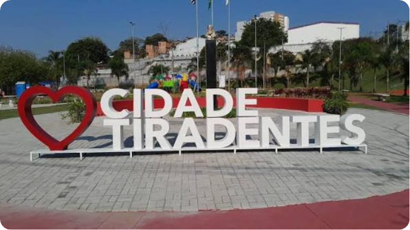

F.A.C.P — Conselho de valorização à cultura na periferia
O que é a Voz Cultural?
Somos a Voz Cultural – F.A.C.P., um grupo com o propósito de dar visibilidade à cultura periférica e
combater a desigualdade no acesso à arte e à cultura. Acreditamos que a periferia é um espaço de
criatividade, talento e expressão.
Por isso, queremos valorizar artistas locais, incentivar a produção cultural e dar voz à comunidade,
aproximando seus moradores do poder público. Mais do que um grupo, somos um espaço de conexão, participação
e valorização, porque a cultura é um direito de todos, e toda voz merece ser ouvida.
Valorização da cultura na periferia
A valorização da cultura na periferia é fundamental para fortalecer a identidade das comunidades, reconhecer
seus talentos e dar visibilidade às suas histórias.
Por meio de manifestações culturais como o funk, hip hop, grafite e a poesia, os moradores podem expressar
suas ideias, preservar suas origens e mostrar a importância da cultura periférica para a sociedade.
Exemplos de culturas periféricas
Como um grande exemplo, nascida e criada no bairro de Cidade Tiradentes, Rúbia Mara tem uma trajetória
marcada pela cultura, empreendedorismo e pelo desenvolvimento social. Com o funk entre suas principais
frentes de atuação, ela trabalha para fortalecer a música periférica tanto como expressão cultural quanto
como mercado.
Cultura na Cidade Tiradentes

A valorização da cultura na Cidade Tiradentes acontece por meio de equipamentos públicos, coletivos
independentes e ações comunitárias que fortalecem a identidade local e ampliam o acesso à arte.
A Fábrica de Cultura Cidade Tiradentes, por exemplo, oferece cursos gratuitos como teatro, dança, música,
circo, multimeios, artes plásticas e xadrez.